Husenes plassering, og adresser uten bebyggelse pr. 2014.
Øvre Bakklandet 33 - 66
This site is about Bakklandet in Trondheim, Norway. All text in norwegian, but pictures are in english.
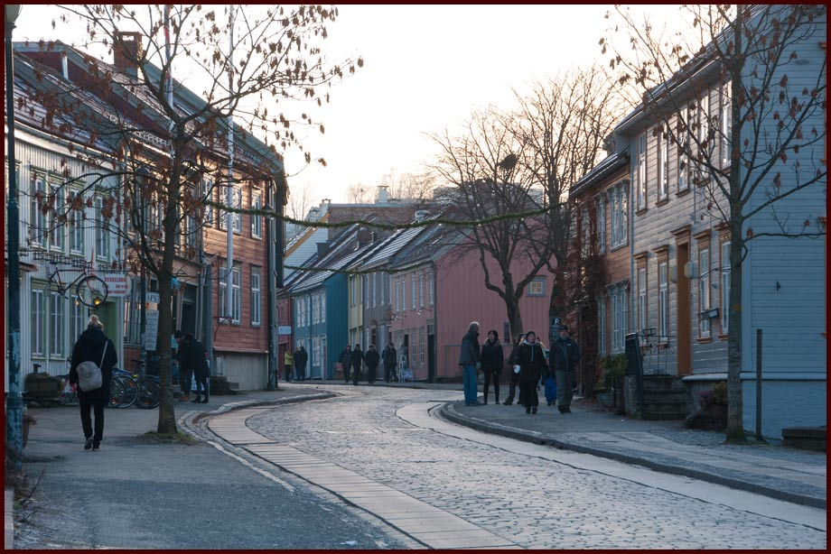
Øvre Bakklandet (Foto: EspeN-ikon ©)
Øvre Bakklandet 33
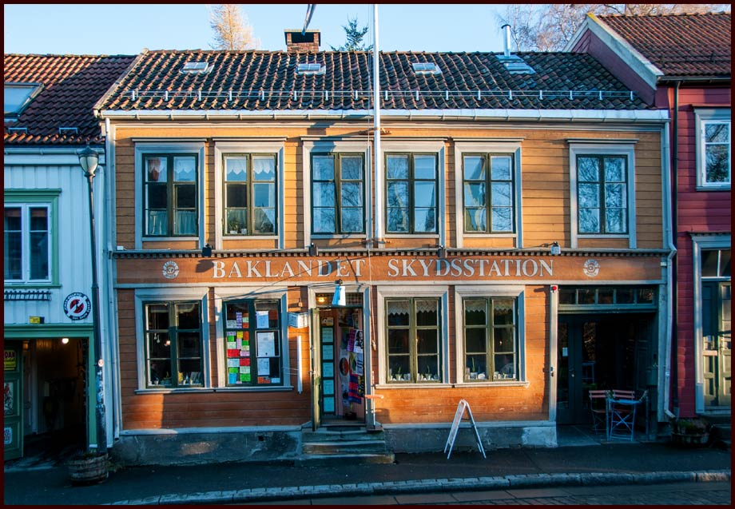
Øvre Bakklandet 33 - 20.november 2012 (Foto: EspeN-ikon ® )
Øvre Bakklandet 34
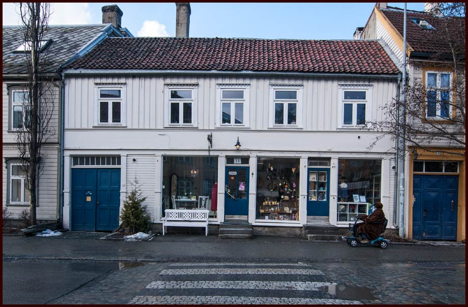
Øvre Bakklandet 36 - Januar 2013 (Foto: EspeN-ikon ® )
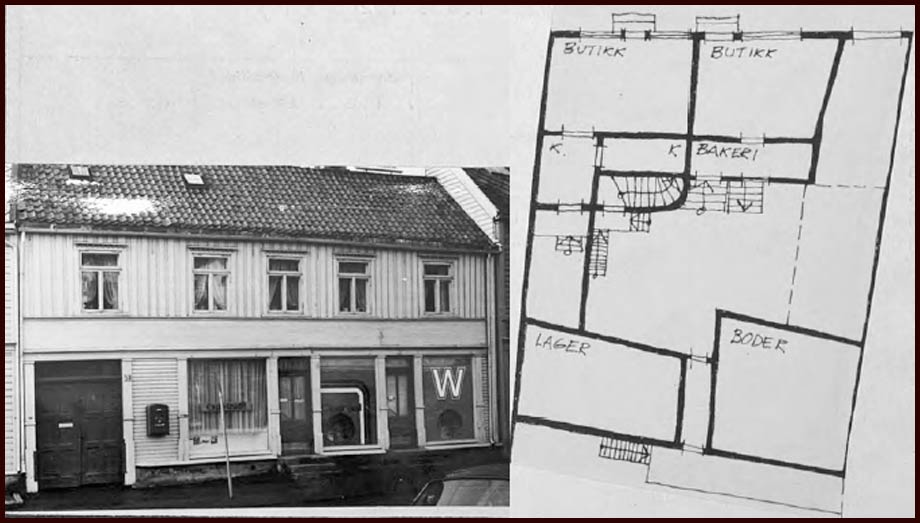
Øvre Bakklandet 36 - 1970 (Foto: Antikvarisk register Trondheim )
Denne eiendommen var i 1970 takstert til Kr. 46.000.-, og eier var Alf Danielsen. Den ble disponert som en kombinasjon av butikklokale og bolig. I 1912 ble ett værelse bygd om til butikk, og i 1929 ble det innredet til melkeutsalg. I 1952 ble det installert vannklosett. Bygningen er med på et gatebilde fra ca. 1880, som finnes hos Tr.heims Historiske Forening. Kilde: Antikvarisk register for Trondheim.
Øvre Bakklandet 35
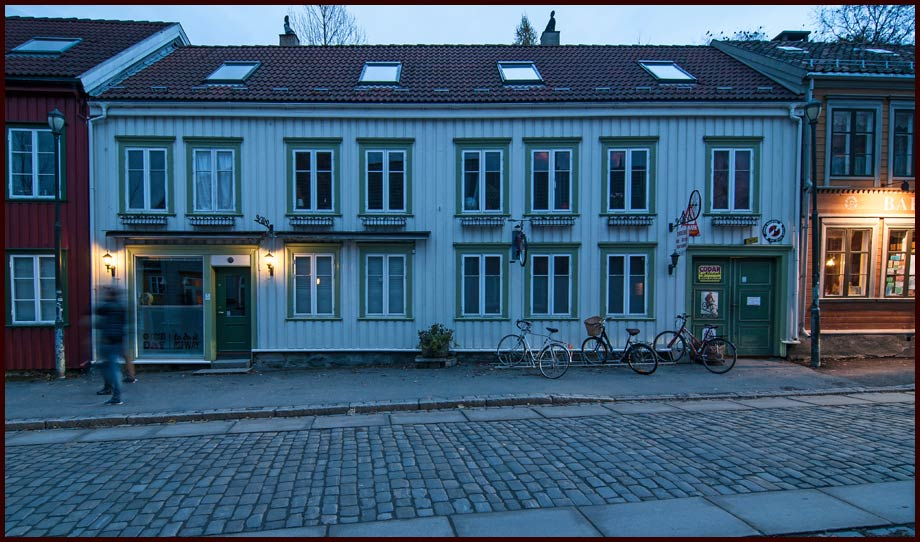
Øvre Bakklandet 35 - 3.november 2013 (Foto: EspeN-ikon ® )
Øvre Bakklandet 36
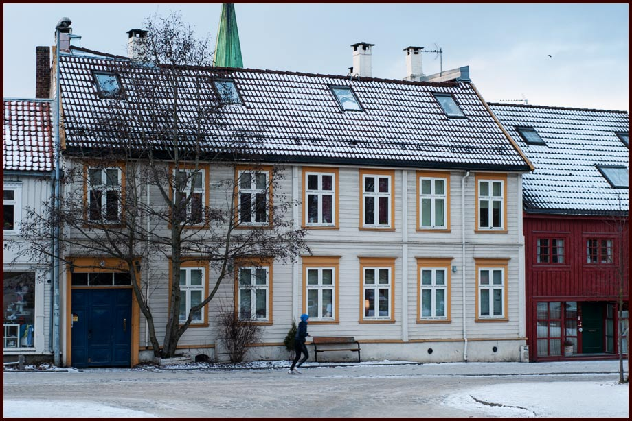
Øvre Bakklandet 34 - Januar 2013 (Foto: EspeN-ikon ® )
Øvre Bakklandet 37
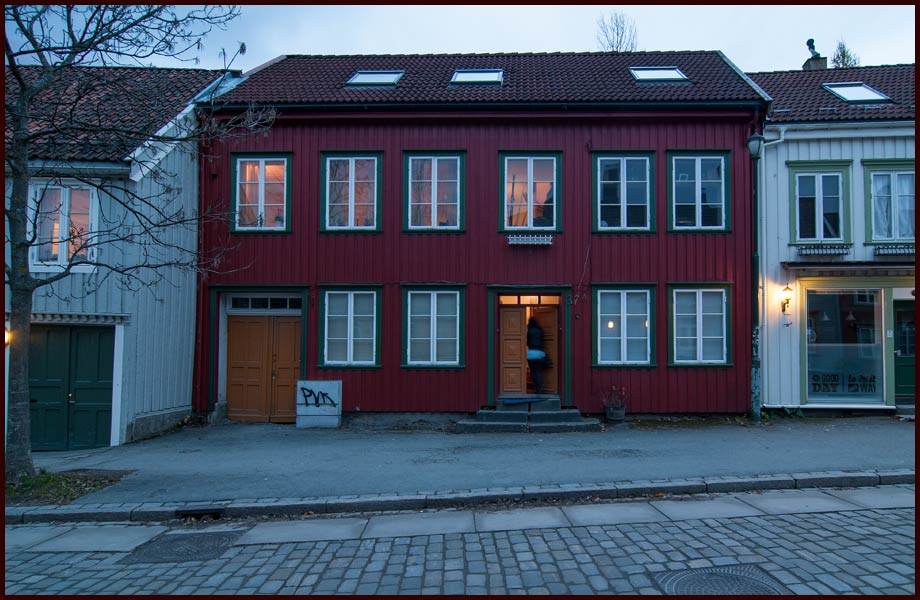
Øvre Bakklandet 37 - 3.november 2013 (Foto: EspeN-ikon ® )
Øvre Bakklandet 38
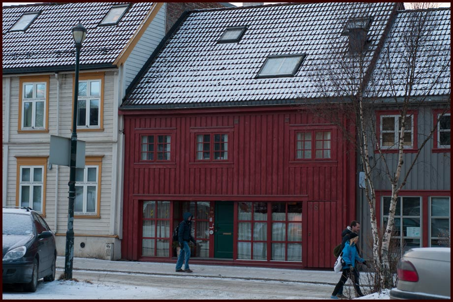
Øvre Bakklandet 38 - Januar 2013 (Foto: EspeN-ikon ® )
I 1948 var det melkeutsalg på denne adressen. Kilde: -> UBiT
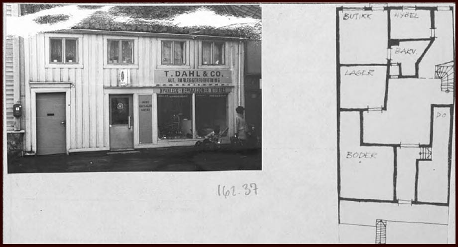
Øvre Bakklandet 38 - 1970. (Foto: Antikvarisk register Trondheim )
I 1970 Sto Helga Svendsen som eier av gården. Den hadde en takst på Kr. 30.000.-. Gården er med på et gatebilde fra ca. 1880, som finnes hos Tr.heims Historiske Forening. Kilde: Antikvarisk register for Trondheim.
Øvre Bakklandet 39
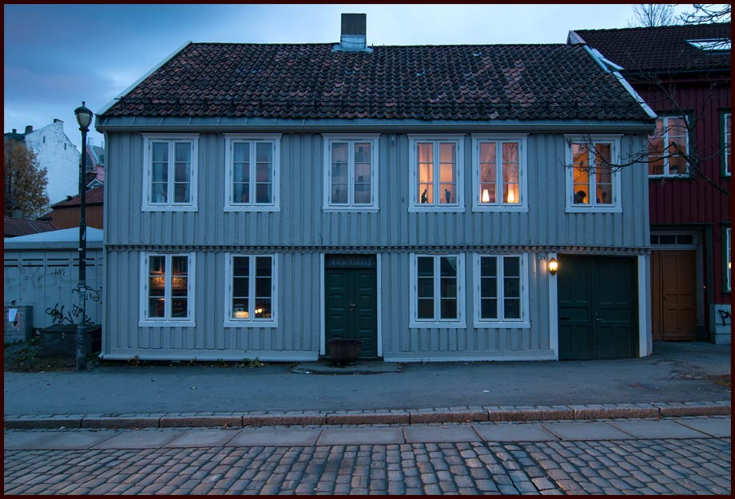
Øvre Bakklandet 39 - 3.november 2013 (Foto: EspeN-ikon ® )
Øvre Bakklandet 40
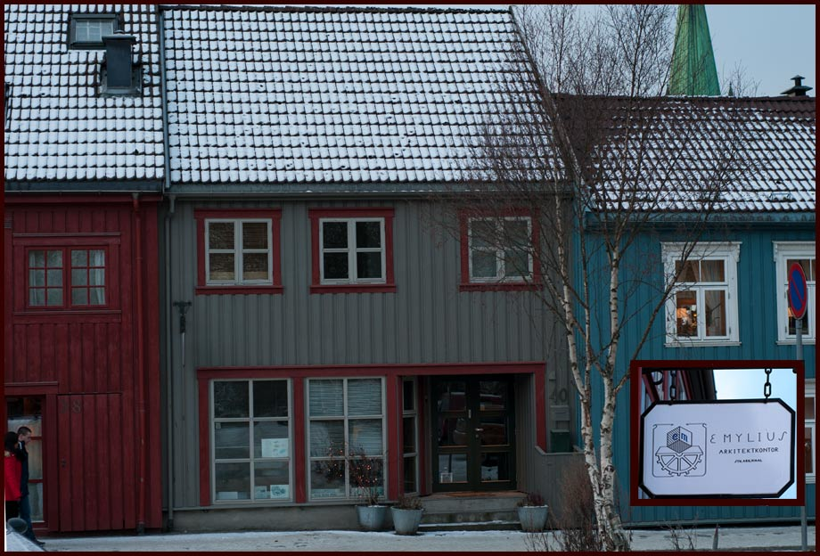
Øvre Bakklandet 40 - Januar 2013 (Foto: EspeN-ikon ® )
i 1948 hadde Fiskehandler K.Kristoffersen utsalg i denne gården. Kilde: -> UBiT
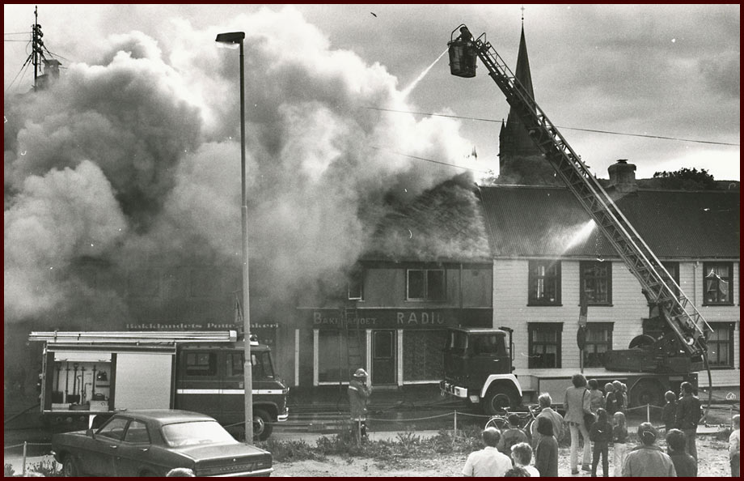
Brann på Øvre Bakklandet 38 - 42, (21. juni 1982). Fra Trondheim Brannvesens arkiv. (Foto: Ukjent fotograf) Kilde: Trondheim Byarkiv.
På bildet ser vi Bakklandet Pottemakeri og Bakklandet Radio.
↑ Til toppen
Øvre Bakklandet 41

(Foto: 1904 - Ukjent fotograf Kilde: http://www.flickr.com/photos/trondheim_byarkiv/ )
Øvre Bakklandet 41, som ligger på hjørnet av Øvre Bakklandet og Brubakken, er et sår i "Bakklandskapet".
Denne tomten har blitt brukt til parkering, så lenge de fleste kan huske. I 1941 hadde lagerarbeider og varamann i byrådet, Arne Kjøl, adresse her.
Et bilde fra 1948 kan sees her: -> UBiT
Øvre Bakklandet 42
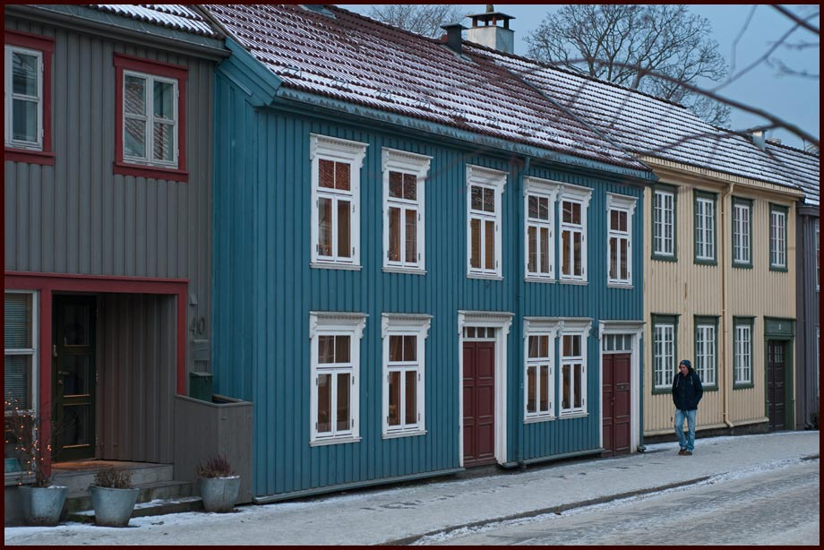
Øvre Bakklandet 42 - Januar 2013 (Foto: EspeN-ikon ® )
Øvre Bakklandet 44
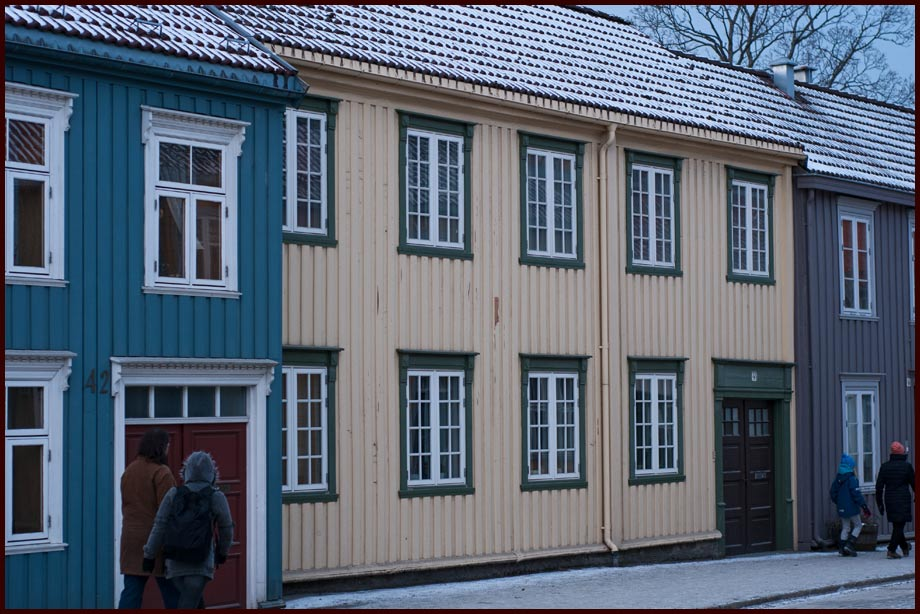
Øvre Bakklandet 44 - Januar 2013 (Foto: EspeN-ikon ® )
Øvre Bakklandet 46
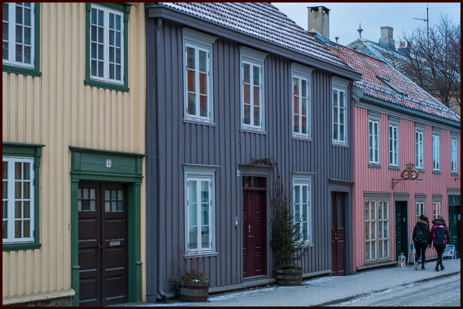
Øvre Bakklandet 46 - Januar 2013 (Foto: EspeN-ikon ® )
Øvre Bakklandet 48
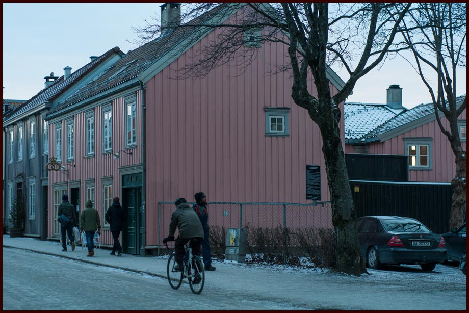
Øvre Bakklandet 48 - Januar 2013 (Foto: EspeN-ikon ® )
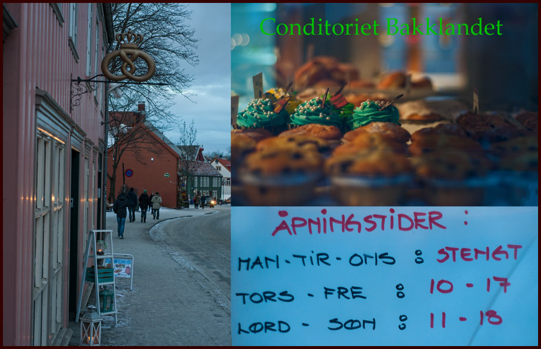
Øvre Bakklandet 48 - Conditoriet Bakklandet - Januar 2013 (Foto: EspeN-ikon ® )
Øvre Bakklandet 50
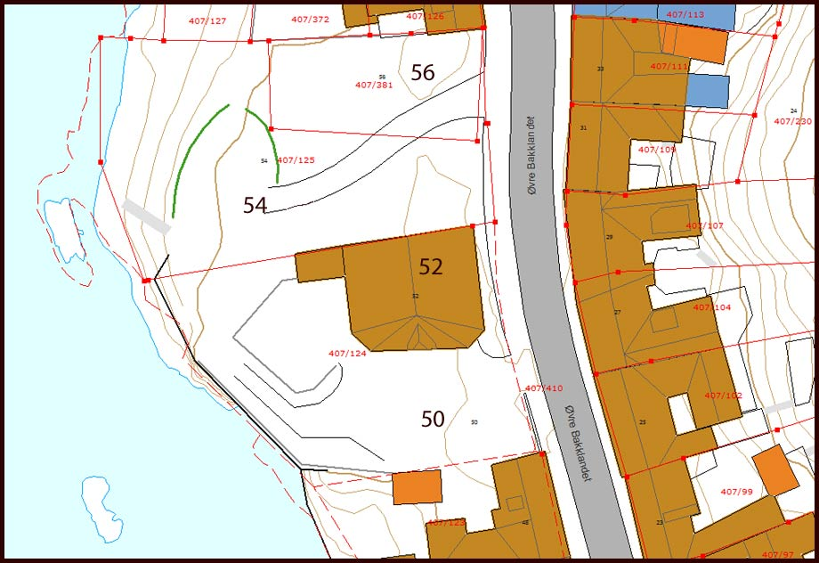
Øvre Bakklandet 50 er ubebygd, og fungerer som gårdsplass for Øvre Bakklandet 52 (Kart: Trondheim Kommune )
Øvre Bakklandet 52
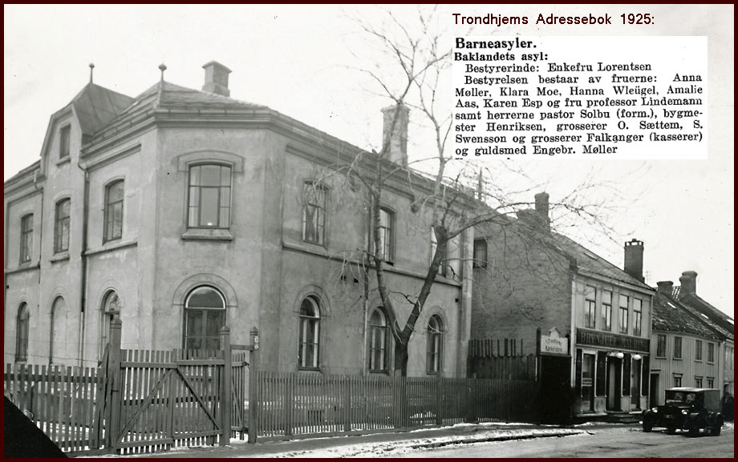
Bakklandet Barneasyl - Øvre Bakklandet 52 (Foto: Ukjent fotograf) Kilde: Trondheim Byarkiv
Bakklandet Barneasyl / Øvre Bakklandet 52
Øvre Bakklandet 52 og 54. Den toetasjes bygningen fra ca. 1830 har saltak. Nummer 54 var AS Trondhjems Korkefabrik, en tidligere bedrift som lå på det nåværende friområdet Gåsaparken. Denne eindommen tilhørte i andre halvdel av 1800-tallet bakermester Hans Hegdahl, og ble revet i 1973.
Bakklandet barnehage (tidligere Baklandet Børneasyl) er en av byens eldste barnehager og ble opprettet i 1840 av Trondhjems Asylselskap. I 1842 fikk de lokaler i Nedre Bakklandet 47 A hvor de var inntil 1889, da de flyttet til Øvre Bakklandet 52. Bakklandet Barneasyl skiftet navn til Bakklandet Barnehage i 1938. I 1975 ble virksomheten flyttet til Nedre Allé 11.
Trondhjems Korkefabrik, A/S (Ø. Bakkl. 54, tlf. 773) er grunnlagt i 1897 med en aksjekapital på kr. 15 500, som senere er blitt forhøiet til kr. 90 000. Styret består av kjøpmann O. Aavatsmark, formann, grosserer Franz Wilhelmsen og apoteker R. N. Hirsch. Som disponent fungerer Bjarne Raad. Virksomheten omfatter fabrikasjon av alle slags flaskekork, fiskegarnskork samt livbelter og livbøier. Det samlede areal utgjør ca. 900 kvm., og firmaet beskjeftiger 15 mann.
Kilder:
Hoffstad, E.: Illustrert Norsk Næringsleksikon (1940) bd. III.
Bratberg, T.: Trondheim Byleksikon (Oslo 2008)
Trondheim Byarkiv:
→ Øvre Bakklandet 52 på Flickr.
Øvre Bakklandet 54
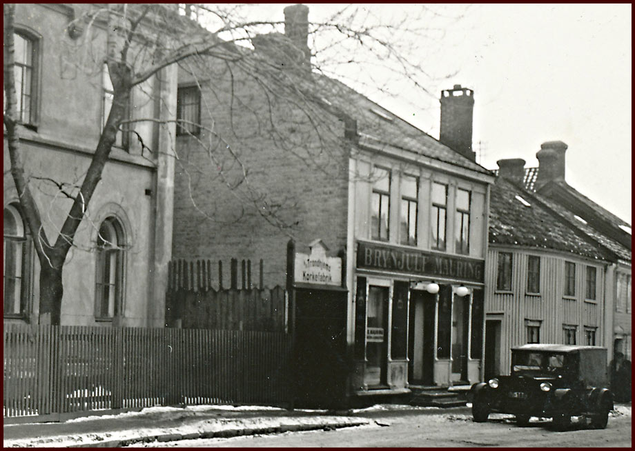
Øvre Bakklandet 54 (Foto: Ukjent fotograf) Kilde: Trondheim Byarkiv
Adressebok fra 1923 viser at B.Mauring Bakeri & Konditori hadde tilhold i Øvre Bakklandet 54. Brynjulf Mauring, hans mor og søsken (?) bodde i Wessels gt, 32. (— Bjarne, bankass., — Brynjulf, bakerm., — Martha, enkefru, — Roar, bankass. )
Tronhjems Korkefabrikk A/S. Firmaet produserte alle slags flaskekorker, fiskegarnskork samt livbelter og livbøyer. Kilde: Industrimuseum.no
Bilde Av Trondhjems Korkefabrikk:
→ Digitalt Museum sitt bilde
Øvre Bakklandet 56
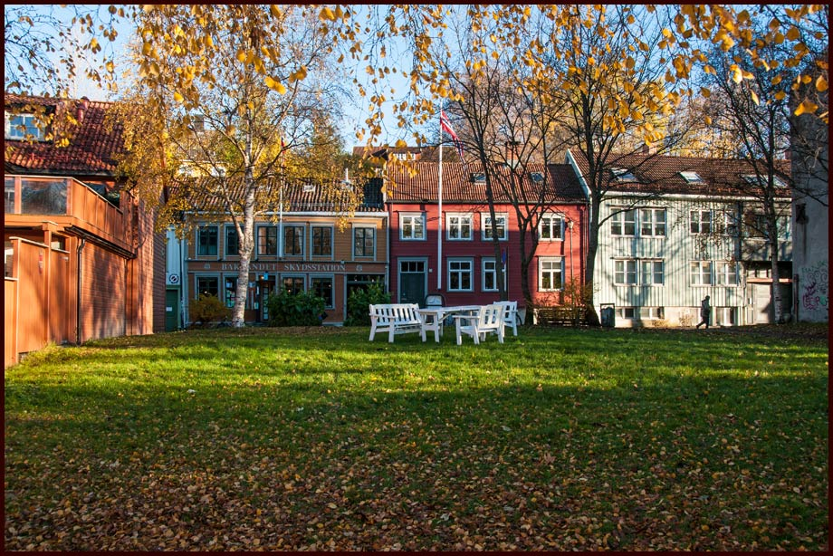
Øvre Bakklandet 56 - November 2013 (Foto: EspeN-ikon ® )
For å se huset som sto her, se bildet av Øvre Bakklandet 54. Der ser vi ØB 56, til høyre i bildet.
Øvre Bakklandet 56 er i dag venstre del av det vi ser som parkområde på bildet. Tomtegrensen sees på kartet som ligger under Nedre Bakklandet 50. →NB50 Tomten ble lagt ut for salg i 2012, priset til 3.850.000.-, noe som skapte stort engasjement for å bevare "Gåsaparken". Det endte med at kommunen kjøpte tomta, og Gåsaparken ble reddet. Ildsjel Trude Sandnes startet blant annet en facebookgruppe, for å bidra til at parken ble bevart. → Gåsaparken på Facebook
Øvre Bakklandet 58
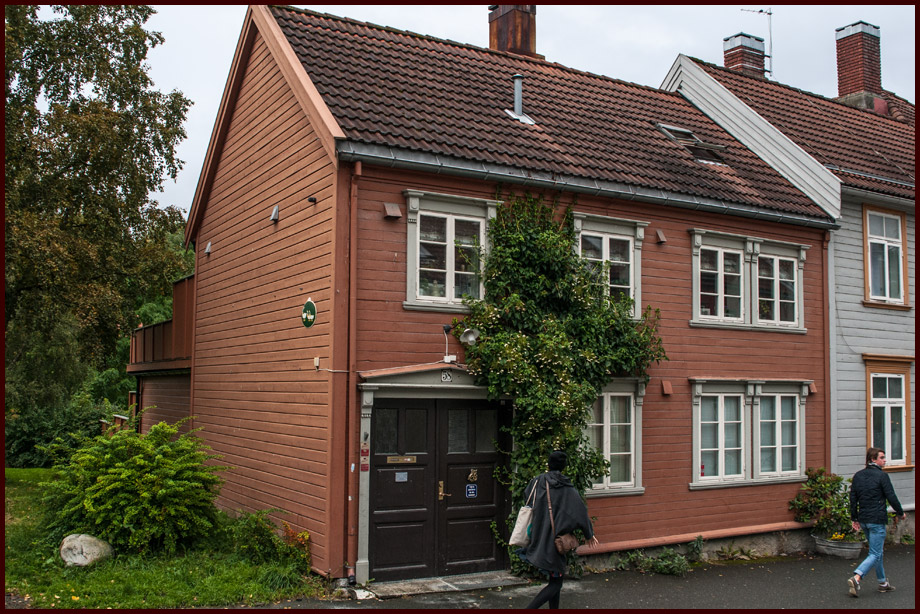
Øvre Bakklandet 58 - September 2015 (Foto: EspeN-ikon ® )
Øvre Bakklandet 60
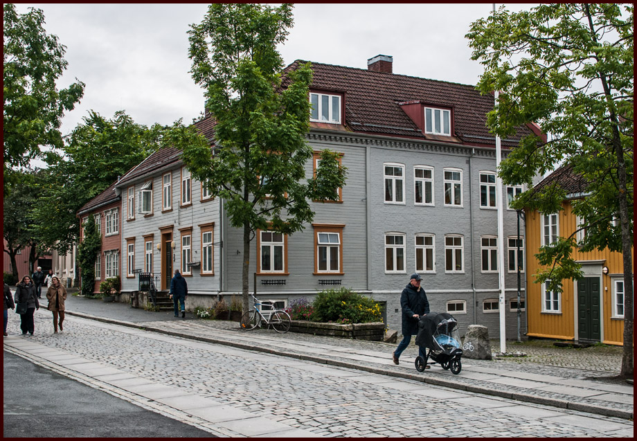
Øvre Bakklandet 60 - September 2015 (Foto: EspeN-ikon ® )
Øvre Bakklandet 62
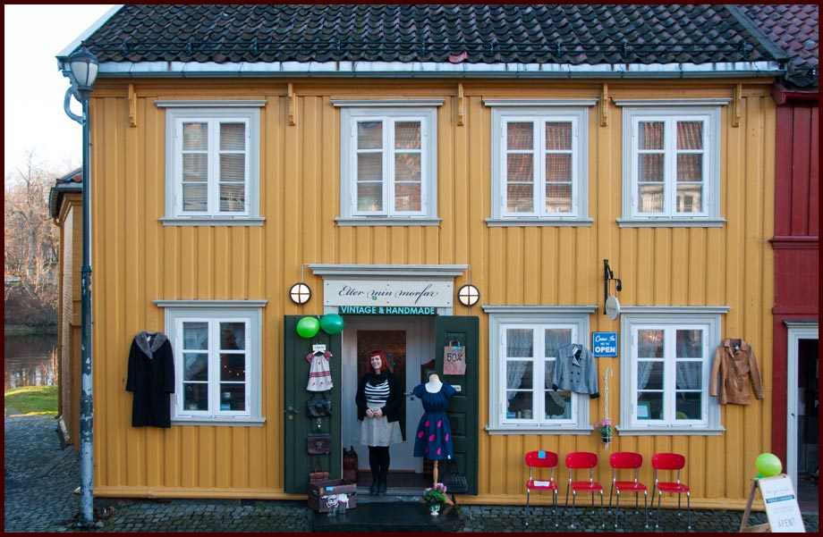
Øvre Bakklandet 62 - November 2013 (Foto: EspeN-ikon ® )